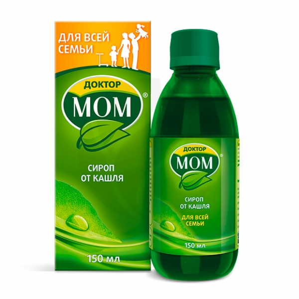
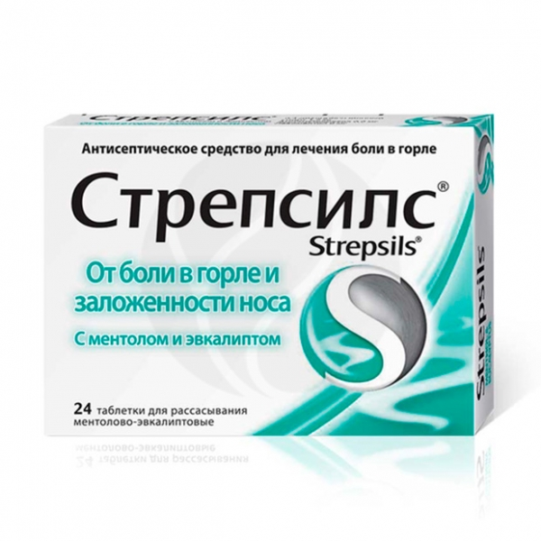

| Доктор МОМ сироп, 150мл |
Действующие вещества:
cухие экстракты, выделенные из:
Адатоды васики листьев, корней, цветков, коры (Adhatoda vasika) - 600 мг
Алоэ барбадосского листьев, сока и мякоти (Aloe barbadensis) - 500 мг
Базилика священного листьев, семян и корней (Ocimum sanctum) - 1000 мг
Девясила кистецветного корней (Inula racemosa) - 200 мг
Имбиря лекарственного корневищ (Zingiber officinale) - 100 мг
Куркумы длинной корневищ (Curcuma longa) - 500 мг
Паслена индийского корней, плодов, семян (Solanum indicum) - 200 мг
Перца кубебы плодов (Piper cubeba) - 100 мг
Солодки голой корней (Glycyrrhiza glabra) - 600 мг
Терминалии белерики плодов (Terminalia belerica) - 200 мг
Левоментол - 60 мг |
 |
| Стрепсилс таблетки для рассасывания с ментолом и эвкалиптом, №24 |
Одна таблетка для рассасывания содержит
действующие вещества: амилметакрезол 0,6 мг, 2,4-дихлорбензиловый спирт 1,2 мг, левоментол 8 мг;
вспомогательные вещества: эвкалипта прутовидного листьев масло 2,57 мг, винная кислота 26 мг, индигокармин 0,03 мг, сахароза жидкая, декстроза жидкая [декстроза, олиго- и полисахариды] (жидкая глюкоза) до получения таблетки массой 2,6 г. |
 |